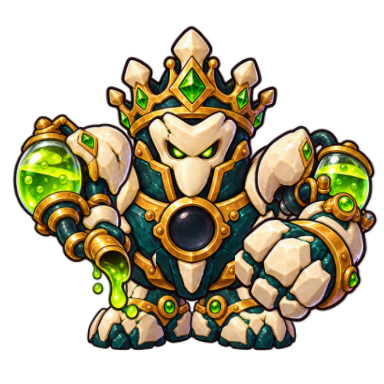
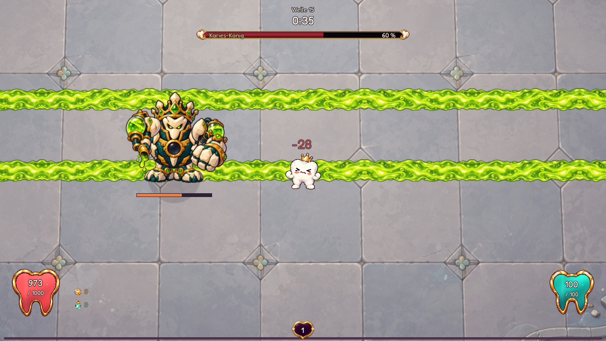
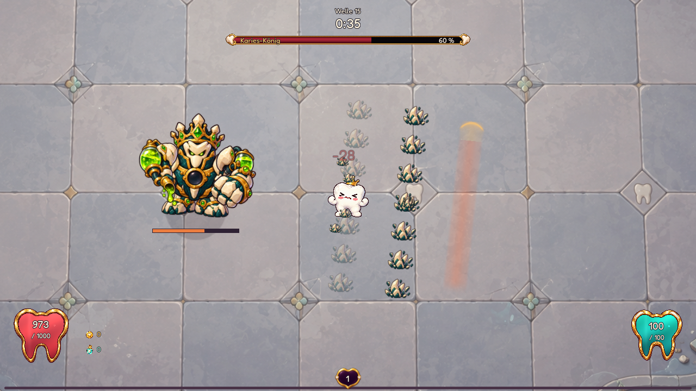
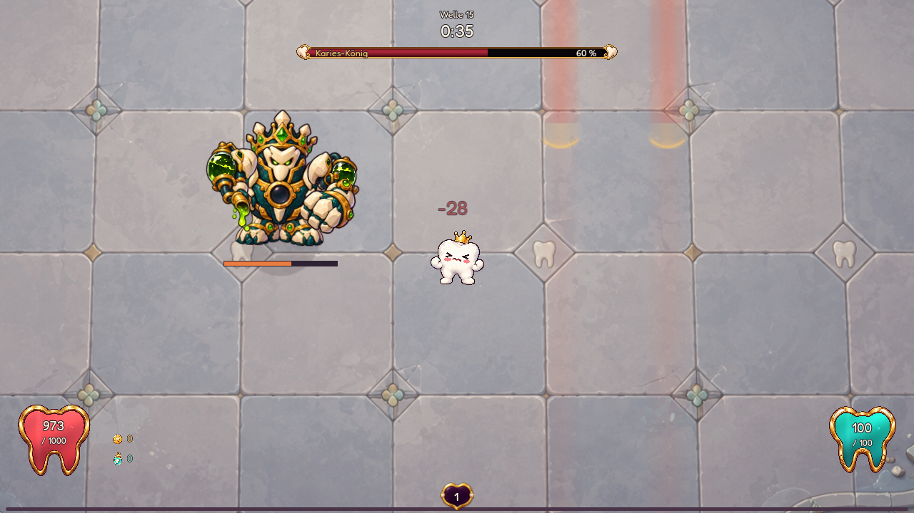
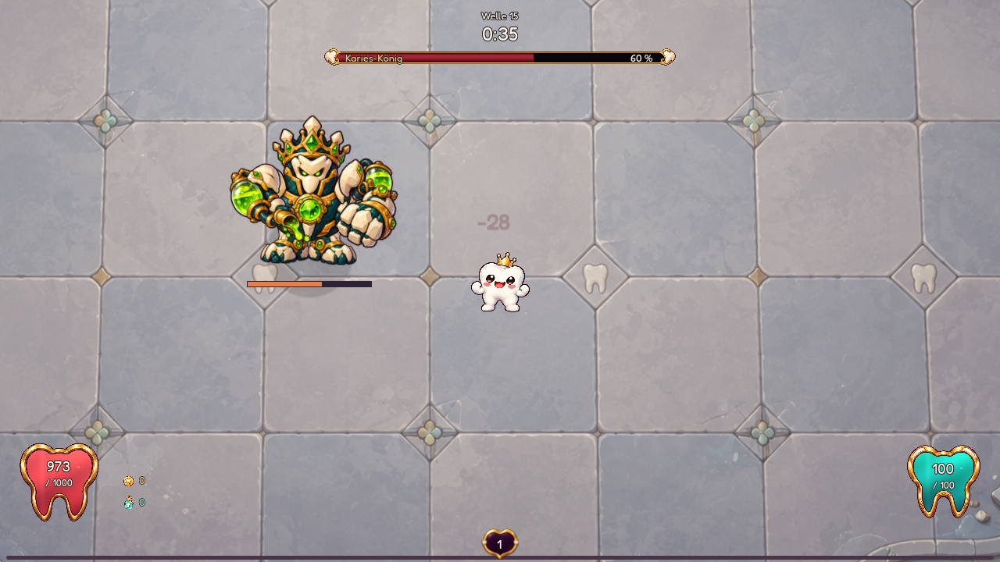
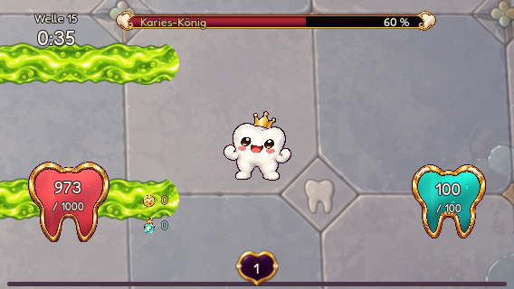
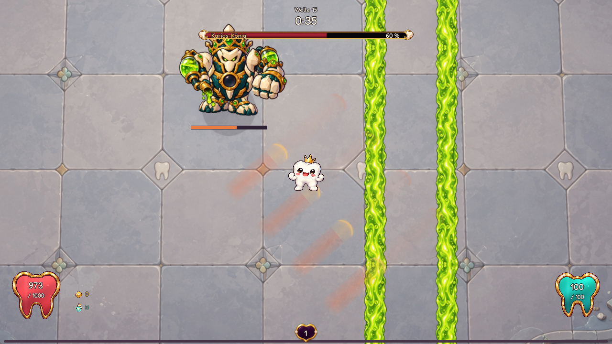

DENTI · DRITTER BOSS · IM SPIEL ANGESCHLOSSEN

Der Säuresammler.
Der König teilt den Boden mit fließender Säure. Er versetzt die Rinnen, bricht Zahnsteinreihen auf und zieht seinen Vorrat wieder ein. Dann öffnet sich sein Kern für einen Gegenangriff.
Normal · zweite Gesundheitsphase · zwei Rinnen, ein Pegelwechsel, vier Reihen mit je fünf Splittern.
1 · SäurerinnenEine Sekunde Vorwarnung, dann fließt die Säure durch die markierten Bahnen. Früh ein Ufer wählen. Die Bahn bleibt an ihrem Ort, auch wenn Denti mit der Kamera weiterläuft. Ihre Enden sind rund und haben dieselbe Trefferform.
2 · PegelwechselDie nächste Rinne leuchtet auf. Der alte Strom versiegt, bevor der neue aktiv wird. Auf Easy und Normal folgt ein Wechsel, auf Hard zwei, auf Hell drei. Kein unangekündigtes Nachziehen unter Denti.
3 · SplitterstampfDie Steinfaust hebt sich; markierte Risse brechen nacheinander auf. Jede Reihe schickt echte Zahnsteinsplitter nach außen. Seitlich ausweichen oder rechtzeitig nach innen wechseln. Später verbindet der König den Stampf mit seinen letzten Säurerinnen.
4 · SammlerzugDie Strömung kehrt sich um, die Behälter füllen sich wieder. Danach wird der Boden frei und die Brust öffnet sich für 1,6 Sekunden. Treffer gegen den offenen Kern verursachen mehr Schaden.

Säurerinnen · aktive Flächen
Splitterstampf · versetzte Reihen
Pegelwechsel · nächste Ufer angekündigt
Sammlerzug · AngriffsfensterBahnende beim Nachlaufen und Kombination in der letzten Phase

Das bestehende Bahnende beim Nachlaufen. Die Kamera verlängert die Säure nicht.
Letzte Gesundheitsphase: letzter Rinnensatz und angekündigter Stampf.Normal: Hochkant und Querformat
Je 28 Sekunden native Godot-Aufnahme auf allen vier Stufen. Skriptgesteuerter Denti mit 1.000 HP, ohne Waffen und normale Gegner; zweite Gesundheitsphase. Die Abbildungen zeigen zusätzliche Einzelmomente. Der König ersetzt den alten Ablauf im regulären Welle-15-Profil sowie Story und Endlos. Die Warnzeiten bleiben auf allen Stufen gleich; Bewegung, Rinnenwechsel, Reihen und Projektile skalieren.
Generierte, gemalte Einzelteile mit sechs Gelenken und animiertem Flüssigkeitspegel. Säure und Splitter nutzen wiederverwendete Texturen. Höchstens zwei aktive Rinnen bei zwei Königen und ein begrenzter Geschossbestand. Menschliche Spieltests mit vollständigen Builds und Messungen auf mobilen Web-Geräten stehen noch aus.
Kronengericht-Imperator · Karamellprinz · Umhang-Graf · Charge-Warnungen